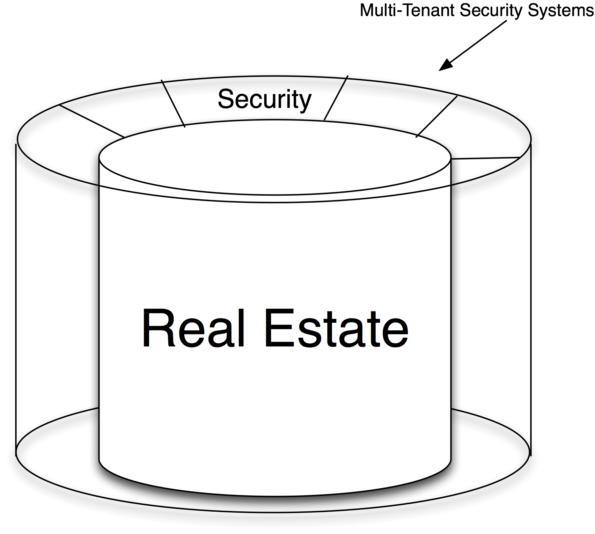

The Data Center Security Systems Model
Security includes all systems protecting the physical assets in the Internet Data Center: perimeter and in-building access control and monitoring systems as well as security guards, escorts, and physical add-ons like bulletproof glass and Kevlar perimeter walls.
If the data center will service a single tenant, then the security systems ring can be as simple as a badge-secured exterior and a sufficiently secured employee badge reader (Figure 12-8). For multi-tenant data centers, however, the security ring gets more complicated.
Shared Internet Data Center security systems must handle the added complexity of access of multiple customers. Solutions range from escorted access and supervised use to free (zoned) access. This complexity may not be required if the data center is built solely for use by a single company. In both cases, the goal is to keep unauthorized staff away from the colocated equipment.
The cost and scaling of the security depends more upon the application than on the scale of the data center. For example, a small section of a building that is essential to the operation (like the cashier office in a casino) may be equipped with armed guards, many surveillance cameras, etc. Likewise a shared facility may require more participant cages and authentication than a single-user facility.
Having said all of that, economies of scale do exist. The incremental cost is small. Additionally, the larger facilities can allocate the indirect costs of guard access gates (Figure 12-9), circulating guards, bulletproof glass, and Kevlar perimeter protection, etc. across a larger set of equipment, helping make the actual unit cost for security of large data centers lower on a per-rack basis.

Figure 12-8. The security layer of the data center model.
It was pointed out that customers tend to demand more security from a shared facility than they would from their own facility because many believe that collectively they can afford more than they can individually. For example, integrated environmental (temperature, humidity, electric draw) and security (surveillance cameras on both sides of racks, cage access log) information feeds may be “required” since the cost per rack is relatively low. Shared environments generally require more complex security systems.
One practical implication of security in a shared data center is physical access. When equipment must be repaired during off hours, some Internet Data Centers (particularly telephone company facilities) do not make it easy to gain access to the failed equipment in the middle of the night. Others require escorts at all times.
After the real estate is fitted with a security system, it is secured and inherently more valuable than plain real estate. Next we will increase the value by adding conditioned power and air to the model.
Figure 12-9. Perimeter access to an IDC.